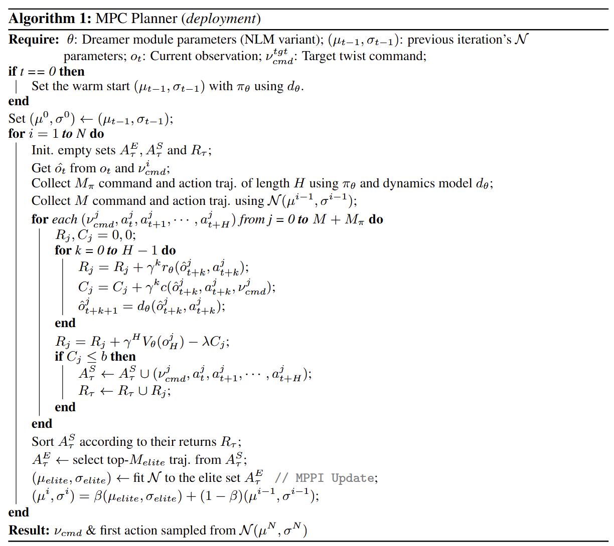
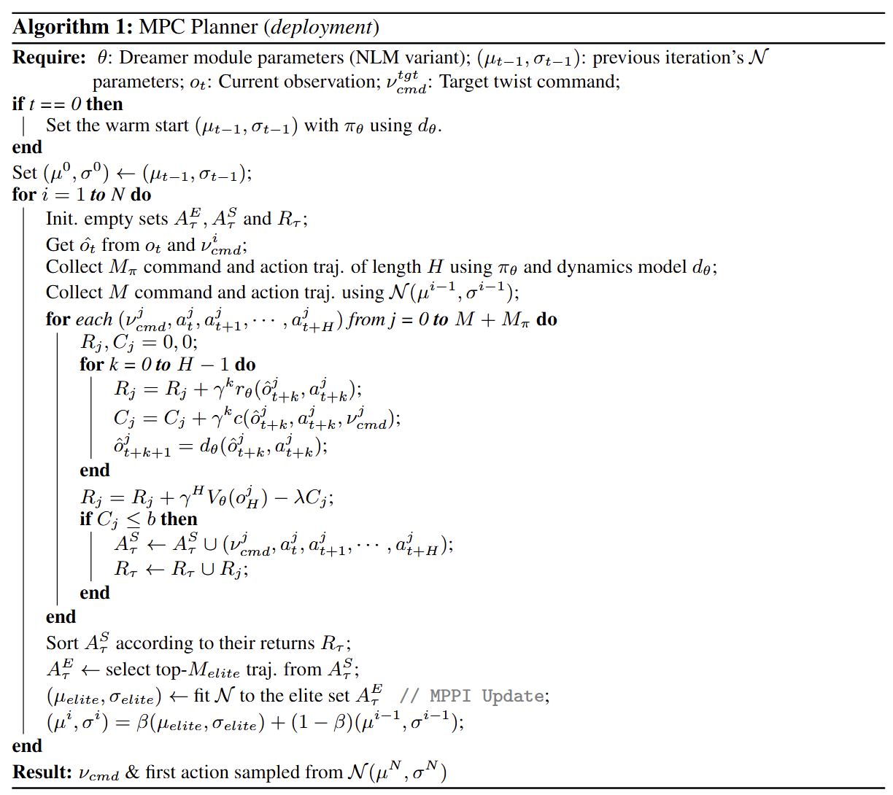

A core strength of Model Predictive Control (MPC) for quadrupedal locomotion has been its ability to enforce constraints and provide interpretability of the sequence of commands over the horizon. However, despite being able to plan, MPC struggles to scale with task complexity, often failing to achieve robust behavior on rapidly changing surfaces. On the other hand, model-free Reinforcement Learning (RL) methods have outperformed MPC on multiple terrains, showing emergent motions but inherently lack any ability to handle constraints or perform planning. To address these limitations, we propose a framework that integrates proprioceptive planning with RL, allowing for agile and safe locomotion behaviors through the horizon. Inspired by MPC, we incorporate an internal model that includes a velocity estimator and a Dreamer module. During training, the framework learns an expert policy and an internal model that are co-dependent, facilitating exploration for improved locomotion behaviors. During deployment, the Dreamer module solves an infinite-horizon MPC problem, adapting actions and velocity commands to respect the constraints. We validate the robustness of our training framework through ablation studies on internal model components and demonstrate improved robustness to training noise. Finally, we evaluate our approach across multi-terrain scenarios in both simulation and hardware.
Here, an adaptation module models environment hidden parameters (like friction, contact forces, etc). An internal model predicts the robot base velocities, latent states for terrain characteristics/disturbance responses, or future observations up to H steps. NLM, PLM, and FLM denote the No-Latent, Partially-Latent, and Fully-Latent Dreamer Modules, respectively (see the paper for details).
The internal model (comprising of a velocity estimator and Dreamer module) learns in a co-dependent way with the Asymmetric Actor-Critic. The Dreamer module facilitates temporal reasoning by dreaming about future observations and latent states, enhancing exploration for improved locomotion behaviors.
 

The Dreamer module solves an infinite-horizon MPC problem to generate actions for the robot, ensuring robust constraint handling and adaptive locomotion across terrains. See the paper for more details on the algorithm.
Our approach demonstrates robust locomotion behaviors across multiple terrains, including gravel surfaces, slopes, stairs, and steep drops of upto 45cm.


@misc{shirwatkar2024piplocoproprioceptiveinfinitehorizon,
title={PIP-Loco: A Proprioceptive Infinite Horizon Planning Framework for Quadrupedal Robot Locomotion},
author={Aditya Shirwatkar, Naman Saxena, Kishore Chandra and Shishir Kolathaya},
year={2024},
eprint={2409.09441},
archivePrefix={arXiv},
primaryClass={cs.RO},
url={https://arxiv.org/abs/2409.09441},
}